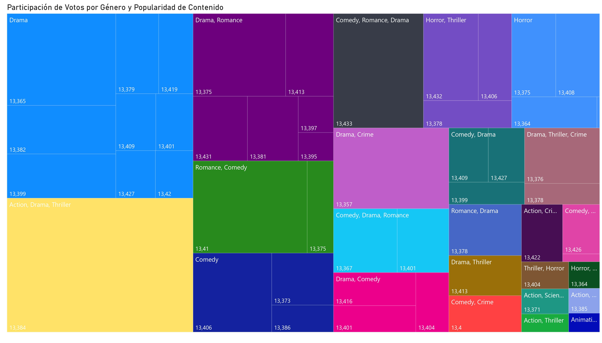
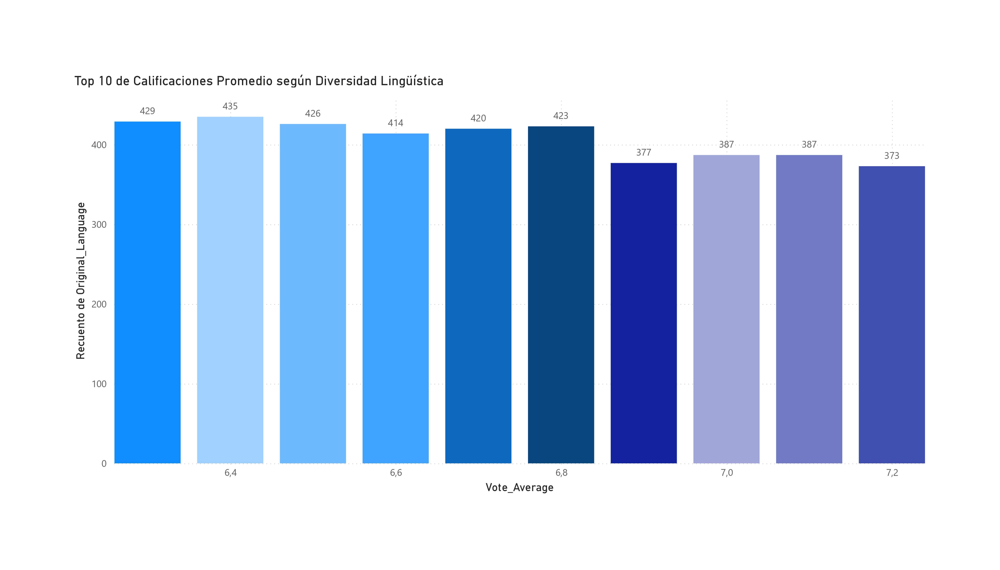
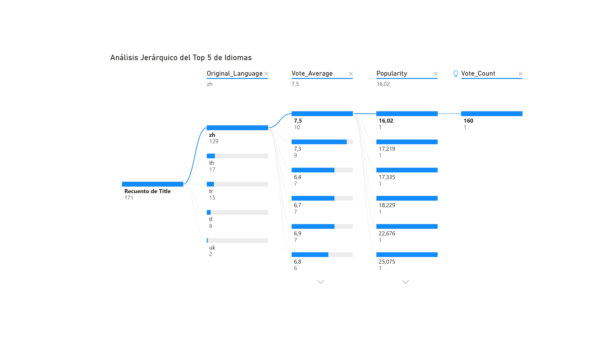
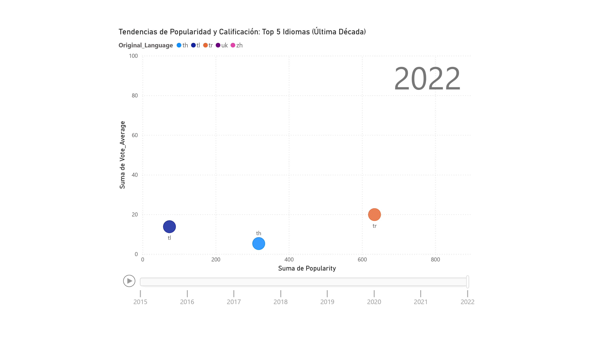

Trabajo Práctico
Fuentes
- URL del repositorio GitHub: viu
- URL del presente proyecto: my_project_url
- URL de Google Colab: google_colab
- URL de Kaggle: dataset
Descripción General
Este proyecto es una solución integral de Data Engineering y Business Intelligence diseñada para analizar el mercado global del cine. El flujo de trabajo abarca desde la limpieza programática en Python hasta la publicación de resultados en la web, integrando herramientas líderes en la industria para transformar un dataset crudo (MyMovieDB) en una plataforma de consulta interactiva.
Google Colab
Top 10 Películas más Populares y su Fecha de Estreno
Tipo de Gráfico: Gráfico de Barras Horizontales (Horizontal Bar Chart).
Descripción: Este gráfico representa el Top 10 de películas con mayor índice de popularidad dentro del dataset mymoviedb_limpio.csv. Cada barra representa una película única, donde la longitud de la barra está determinada por su métrica de Popularity.
Pregunta de Negocio: ¿Cuáles son las 10 películas más populares del catálogo y en qué momento histórico o reciente se produjeron sus estrenos?.
Enfoque: Análisis de Rendimiento de Producto (Product Performance Analysis).
Justificación: El gráfico de barras es el estándar técnico para el análisis de "Top-K". Al alinear los títulos en un eje común, permite una comparación milimétrica de la Popularidad, haciendo evidente la brecha de rendimiento entre la película #1 y las demás. La orientación horizontal es la mejor decisión de diseño para datos con etiquetas largas (títulos de películas). Permite una lectura natural de izquierda a derecha, eliminando la carga cognitiva de tener que rotar el texto o inclinar la vista.
Tendencias del Cine: Cantidad, Popularidad y Calidad por Año
Tipo de Gráfico: Gráfico de Burbujas Temporal (Bubble Chart) con interactividad de rango.
Descripción: El gráfico muestra la evolución histórica de la industria cinematográfica desde principios del siglo XX hasta aproximadamente 2024. Se observa un crecimiento exponencial en la producción de películas a partir de la década de 1980, alcanzando un pico máximo cerca de 2019.
Pregunta de Negocio: ¿Cómo ha afectado el incremento masivo en el volumen de producción cinematográfica a la calidad percibida por el público, y qué impacto tuvo el periodo 2020-2022 en la industria?.
Enfoque: Analítico-Evolutivo.
Justificación: Permite visualizar cuatro dimensiones ($X, Y, Tamaño, Color$) en un solo plano bidimensional, facilitando la detección de correlaciones complejas sin necesidad de múltiples tablas. Es evidente una burbuja de gran tamaño pero coloración distinta en los años recientes. Esto justifica una investigación profunda sobre si la cantidad está sacrificando la calidad. Justifica inversiones en nichos de "alta calidad" (burbujas amarillas/verdes) frente a la saturación de contenido de baja calificación.
Distribución Anual de Películas por Género (Desde 1980)
Tipo de Gráfico: Gráfico de Barras Apiladas (Stacked Bar Chart).
Descripción: Representa el volumen anual de películas estrenadas desde 1980 hasta aproximadamente 2022. Cada barra está segmentada por colores que corresponden a diferentes géneros cinematográficos (Acción, Drama, Comedia, etc.). Se observa un crecimiento exponencial en la producción total a partir del año 2000, con una caída drástica después de 2020.
Pregunta de Negocio: ¿Cómo ha evolucionado la oferta de contenidos cinematográficos por género a lo largo de las décadas y qué géneros han dominado la cuota de mercado en los últimos años previos a la pandemia?.
Enfoque: Análisis de Tendencias Históricas y Composición de Mercado.
Justificación: El gráfico de barras es el estándar técnico para el análisis de "Top-K". Al alinear los títulos en un eje común, permite una comparación milimétrica de la Popularidad, haciendo evidente la brecha de rendimiento entre la película #1 y las demás. La orientación horizontal es la mejor decisión de diseño para datos con etiquetas largas (títulos de películas). Permite una lectura natural de izquierda a derecha, eliminando la carga cognitiva de tener que rotar el texto o inclinar la vista.
Evolución Histórica: Top 5 Géneros Dominantes
Tipo de Gráfico: Gráfico de Líneas Multivariado (Series temporales con múltiples categorías).
Descripción: Representa la evolución anual (1970-2024) del volumen de producción de películas para los cinco géneros más populares: Drama, Comedy, Action, Adventure y Thriller. El eje X muestra el año de estreno y el eje Y la cantidad de películas producidas.
Pregunta de Negocio: ¿Cómo ha evolucionado la oferta cinematográfica por género a través del tiempo y qué tendencias de mercado sugieren los cambios drásticos en la producción reciente?.
Enfoque: Análisis de Tendencias Históricas y Ciclos de Mercado.
Justificación: El gráfico permite visualizar rápidamente que el Drama ha sido históricamente el género con mayor volumen de producción, distanciándose significativamente de los demás a partir de 2015. Muestra que, aunque los volúmenes varían, los 5 géneros principales tienden a seguir un patrón de crecimiento conjunto, lo que indica una expansión general del mercado cinematográfico global hasta 2019. Al observar qué géneros muestran mayor resiliencia o crecimiento (como la Comedia y el Acción que suelen competir por el segundo lugar), los estudios pueden tomar decisiones informadas sobre en qué tipo de contenido invertir según la saturación o demanda del mercado.
PowerBI
Participación de Votos por Género y Popularidad de Contenido
Tipo de Gráfico: Treemap (Mapa de Árbol)
Descripción: Para visualizar la participación de votos por género y popularidad de mi dataset.
Pregunta de Negocio: ¿En qué géneros cinematográficos debería enfocarse una nueva producción para asegurar tanto un alto volumen de interacción (votos) como una relevancia actual (popularidad)?
Enfoque: Toma de Decisiones (Inversión/Producción)
Justificación: Se optó por un Treemap debido a su capacidad para representar estructuras jerárquicas y proporcionales de manera compacta. Esta visualización permite analizar simultáneamente el volumen de participación (mediante el área de los rectángulos) y la intensidad de la popularidad (mediante la escala cromática), facilitando la identificación de los géneros que lideran la industria y aquellos que, a pesar de tener menor volumen, presentan una alta relevancia en las tendencias actuales del dataset. Permite visualizar una gran cantidad de categorías (Acción, Comedia, Drama, etc.) en un solo vistazo, manteniendo la legibilidad incluso para géneros con menor participación que quedarían ocultos o amontonados en otros tipos de visualizaciones.

Top 10 de Calificaciones Promedio según Diversidad Lingüística
Tipo de Gráfico: Gráfico de Columnas Agrupadas
Descripción: Es una de las herramientas más potentes para comparar categorías discretas.
Pregunta de Negocio: ¿Cómo se distribuye el volumen de producción entre los 10 rangos de calificación más altos y cuál es el estándar de calidad más frecuente para la diversidad lingüística global?
Enfoque: Excelencia Crítica (Basado en el Top 10 de Notas)
Justificación: Se utilizó un gráfico de columnas para representar la distribución de frecuencias de la calidad. Es el formato más eficaz para comparar con precisión cuántos idiomas (volumen) se sitúan en cada rango de calificación, permitiendo identificar rápidamente la tendencia central y la dispersión del desempeño crítico en el dataset. La visualización demuestra que, aunque existe una oferta lingüística amplia en niveles de excelencia, el mercado tiende a estabilizarse en un promedio de 6.4. Esto sugiere que para un distribuidor de contenido, el 'Top 10' de idiomas no es un bloque uniforme, sino un ecosistema donde la calidad superior (7.2) es un recurso más escaso y, por lo tanto, de mayor valor competitivo.

Análisis Jerárquico del Top 5 de géneros
Tipo de Gráfico: Esquema Jerárquico
Descripción: debemos destacar cómo el gráfico permite comparar estos mercados específicos de manera granular.
Pregunta de Negocio: ¿De qué manera contribuyen los 5 idiomas principales al volumen total de títulos y qué perfiles de calificación y popularidad definen el éxito de cada una de estas lenguas predominantes?
Enfoque: Descomposición Multidimensional
Justificación: Se utilizó el Esquema Jerárquico para realizar un desglose multidimensional enfocado en el Top 5 de idiomas del dataset. Esta visualización es superior para este análisis porque permite observar la trazabilidad del dato: desde el volumen general de títulos hasta el comportamiento específico de cada uno de los 5 idiomas líderes (zh, th, tr, tl, uk). Facilita la identificación de discrepancias, como descubrir qué idiomas dentro del Top 5 mantienen una alta calidad crítica (Vote_Average) frente a su nivel de popularidad, permitiendo una exploración de causa-raíz que los gráficos convencionales no ofrecen.

Tendencias de Popularidad y Calificación: Top 5 Idiomas (Última Década)
Tipo de Gráfico: Gráfico de Dispersión Animado
Descripción: Destaca la relación entre variables y el factor tiempo.
Pregunta de Negocio: ¿Cómo ha evolucionado la relación entre la popularidad y la calidad crítica de los 5 idiomas principales en la última década, y qué mercados lingüísticos han mostrado un crecimiento más sostenido y competitivo?
Enfoque: Descomposición Multidimensional
Justificación: Se seleccionó este gráfico para realizar un análisis de correlación dinámica entre la Popularidad y la Calidad Crítica. A diferencia de las visualizaciones estáticas, el uso de un eje de reproducción permite observar la trayectoria temporal y la evolución competitiva del Top 5 de idiomas, facilitando la identificación de tendencias de crecimiento, cambios en la percepción del usuario y el surgimiento de mercados emergentes a lo largo de la última década.
